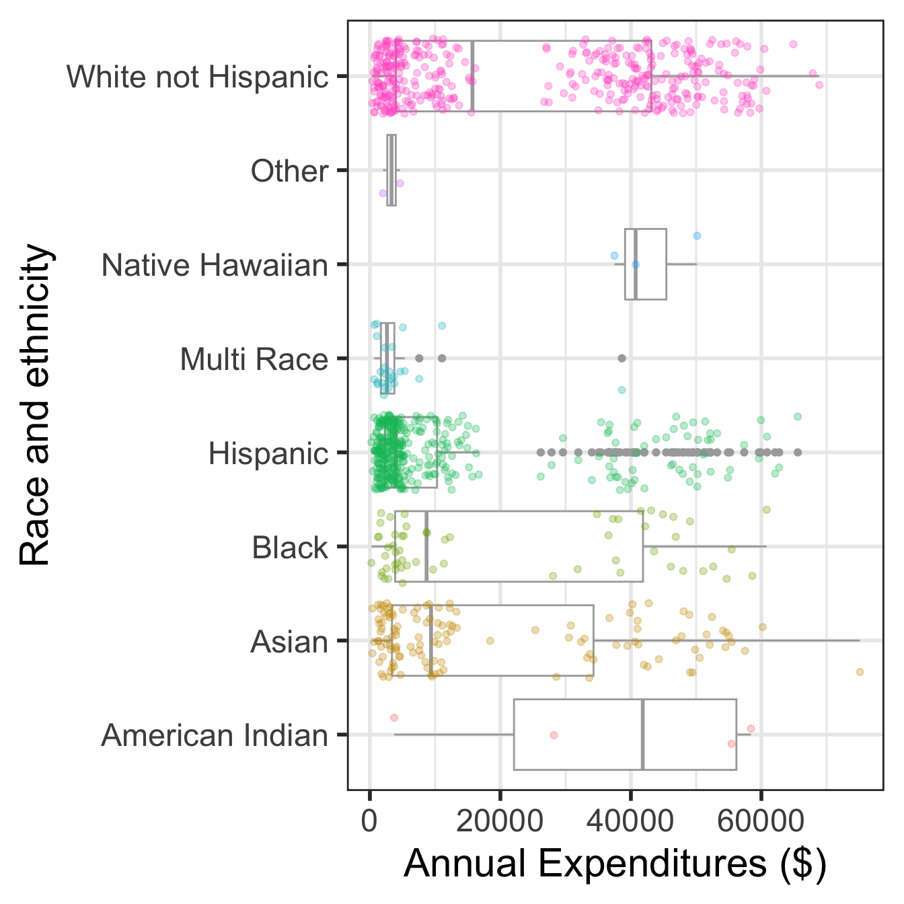
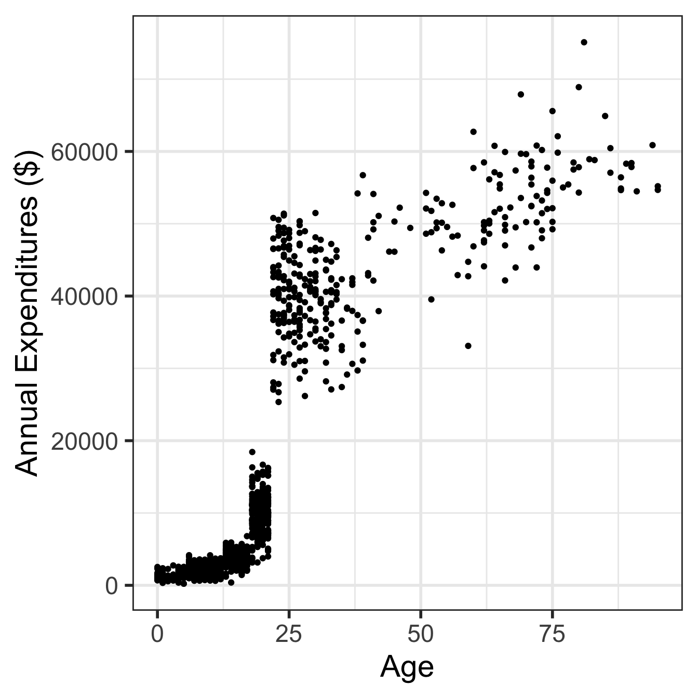

library(oibiostat)
data("dds.discr")Day 3: Data visualization - Part 2
BSTA 511/611, OHSU
Week 2
Back to research question
Case study: discrimination in developmental disability support (1.7.1)
- Previous research
- Researchers examined DDS expenditures for developmentally disabled residents by ethnicity
- Found that the mean annual expenditures on Hispanics was less than that on White non-Hispanics.
- Result: an allegation of ethnic discrimination was brought against the California DDS.
- Question: Are the data sufficient evidence of ethnic discrimination?
Load dds.discr dataset from oibiostat package
The textbook’s datasets are in the R package
oibiostatMake sure the
oibiostatpackage is installed before running the code below.Load the
oibiostatpackage and the datasetdds.discr
the code below needs to be run every time you restart R or render a Qmd file
- After loading the dataset
dds.discrusingdata("dds.discr"), you will seedds.discrin the Data list of the Environment window.
glimpse()
New: glimpse()
- Use
glimpse()from thetidyversepackage (technically it’s from thedplyrpackage) to get information about variable types. glimpse()tends to have nicer output fortibblesthanstr()
library(tidyverse)
glimpse(dds.discr) # from tidyverse package (dplyr)Rows: 1,000
Columns: 6
$ id <int> 10210, 10409, 10486, 10538, 10568, 10690, 10711, 10778, 1…
$ age.cohort <fct> 13-17, 22-50, 0-5, 18-21, 13-17, 13-17, 13-17, 13-17, 13-…
$ age <int> 17, 37, 3, 19, 13, 15, 13, 17, 14, 13, 13, 14, 15, 17, 20…
$ gender <fct> Female, Male, Male, Female, Male, Female, Female, Male, F…
$ expenditures <int> 2113, 41924, 1454, 6400, 4412, 4566, 3915, 3873, 5021, 28…
$ ethnicity <fct> White not Hispanic, White not Hispanic, Hispanic, Hispani…Recall previous data viz


Visualize in more detail:
ethnicity, age, and expenditures (code on next slide)

Code for Visualize in more detail: ethnicity, age, and expenditures
Plot on previous slide
dds.discr_Hips_WhnH <- dds.discr %>%
filter(ethnicity == "White not Hispanic" | ethnicity == "Hispanic" ) %>%
droplevels() # remove empty factor levels
ggplot(data = dds.discr_Hips_WhnH,
aes(x = expenditures,
y = age.cohort)) +
geom_boxplot(color="darkgrey") +
facet_grid(rows = "ethnicity") +
labs(x = "Annual Expenditures ($)",
y = "Race and ethnicity") +
geom_jitter(
aes(color = ethnicity),
alpha = 0.3,
show.legend = FALSE,
position = position_jitter(
height = 0.4)) Mean annual DDS expenditures by race/ethnicity: default long format
mean_expend# A tibble: 12 × 3
# Groups: ethnicity [2]
ethnicity age.cohort ave
<fct> <fct> <dbl>
1 Hispanic 0-5 1393.
2 Hispanic 6-12 2312.
3 Hispanic 13-17 3955.
4 Hispanic 18-21 9960.
5 Hispanic 22-50 40924.
6 Hispanic 51+ 55585
7 White not Hispanic 0-5 1367.
8 White not Hispanic 6-12 2052.
9 White not Hispanic 13-17 3904.
10 White not Hispanic 18-21 10133.
11 White not Hispanic 22-50 40188.
12 White not Hispanic 51+ 52670.Mean annual DDS expenditures by race/ethnicity: wide format
mean_expend_wide# A tibble: 6 × 3
age.cohort Hispanic `White not Hispanic`
<fct> <dbl> <dbl>
1 0-5 1393. 1367.
2 6-12 2312. 2052.
3 13-17 3955. 3904.
4 18-21 9960. 10133.
5 22-50 40924. 40188.
6 51+ 55585 52670.Differences in mean annual DDS expenditures by age cohort and race/ethnicity
mean_expend_wide <- mean_expend_wide %>%
mutate(diff_mean = `White not Hispanic` - Hispanic)
mean_expend_wide# A tibble: 6 × 4
age.cohort Hispanic `White not Hispanic` diff_mean
<fct> <dbl> <dbl> <dbl>
1 0-5 1393. 1367. -26.3
2 6-12 2312. 2052. -260.
3 13-17 3955. 3904. -50.9
4 18-21 9960. 10133. 173.
5 22-50 40924. 40188. -736.
6 51+ 55585 52670. -2915. Question: Are the data sufficient evidence of ethnic discrimination in DDS expenditures when comparing Hispanics with White non-Hispanics?
Simpson’s paradox
This case study is an example of confounding known as Simpson’s paradox
Simpson’s paradox happens when an association observed in several groups disappears or reverses direction when the groups are combined.
In other words, an association between two variables \(X\) and \(Y\) may disappear or reverse direction once data are partitioned into subpopulations based on a third variable \(Z\) (i.e., a confounding variable).

The tidyverse

Tools for wrangling data
tidyversefunctionstidyverseis a suite of packages that implementtidymethods for data importing, cleaning, wrangling, and visualizing- load the
tidyversepackages by running the codelibrary(tidyverse)- Don’t forget to first install
tidyverse!
- Don’t forget to first install
- Functions to easily work with rows and columns, such as
- subset rows/columns
- add new rows/columns
- join together different data sets
- make data long or wide
- There are often many steps to tidy data
- we string together commands
- to be performed sequentially
- using pipes
%>%
Summary of data wrangling so far
- The pipe
%>%to string together commands in sequence mutate()to add a new variable to a datasetselect()to select columns (or deselect columns with -variable)filter()to select specific rowspivot_wider()to reshape a dataset from a long to a wide format
Summarizing data
tabyl()fromjanitorpackage to make frequency tables of categorical variablessummarize()to get summary statistics of variablesgroup_by()to group data by categorical variables before finding summaries
What packages are included in the tidyverse?
Core packages
These automatically load when loading the tidyverse package

List of all packages:
tidyverse_packages(include_self = TRUE) [1] "broom" "conflicted" "cli" "dbplyr"
[5] "dplyr" "dtplyr" "forcats" "ggplot2"
[9] "googledrive" "googlesheets4" "haven" "hms"
[13] "httr" "jsonlite" "lubridate" "magrittr"
[17] "modelr" "pillar" "purrr" "ragg"
[21] "readr" "readxl" "reprex" "rlang"
[25] "rstudioapi" "rvest" "stringr" "tibble"
[29] "tidyr" "xml2" "tidyverse" - Packages not a part of the core get installed with the tidyverse suite, but need to be loaded separately.
- See https://www.tidyverse.org/packages/ for more info.